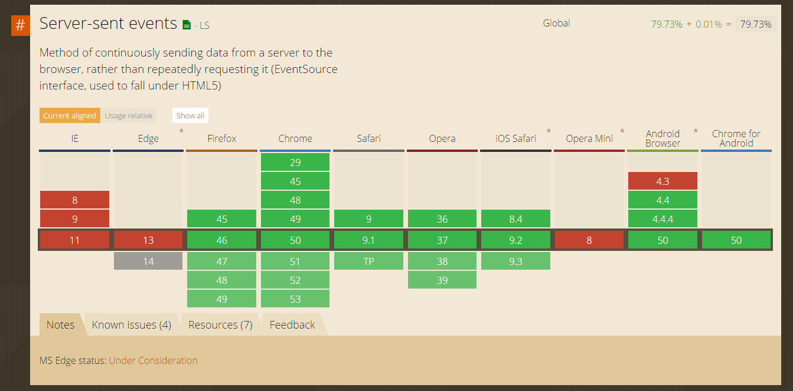

class: center, middle # Introduction to Server Sent Events --- # What's this all about - What is Server Sent Events (SSE)? - Advantages/Disadvantages - When would you use it? - Which platforms support it? - Working with SSE on the Server - Working with SSE in a browser - Working with SSE natively - Quick demo using Spring Boot - A robust implementation --- # What is Server Sent Events? - Uni-directional events Server->Client - [W3C Specification drafted in 2009.](https://www.w3.org/TR/2009/WD-eventsource-20090423/#server-sent-events-intro) - Part of HTML5 - [Supported by all major browsers*†‡♯](http://caniuse.com/#search=EventSource)  --- # Advantages - Simple to implement, leverages HTTP - Decent client support for free - Can perform well at ~30K connected clients. - Only does 1 thing, pushes data to clients. Again, simple. # Disadvantages - Doesn't work behind meddling proxies (streaming) - Only pushes data (single direction unlike Web Sockets). - Only works well for data easily transportable over HTTP. - Can't perform as well as Web Sockets (HTTP overhead). --- # When would you use it / Common use cases? - Push updates to users for semi real time data. - Broadcasting changes to a group of users - Anytime you have a feature that might cause users to hit 'Refresh' for new data. # When NOT to use it - Mission/User critical updates - When any guaranteed delivery is required --- # Which platforms support it? ### Clients - Browsers - Any native client that supports streaming HTTP! - Simple spec = Simple implementation - Many OSS Clients on GitHub ### Servers - [NodeJS](https://www.npmjs.com/package/sse) - [Ruby](http://api.rubyonrails.org/classes/ActionController/Live/SSE.html) - [Spring (not great)]() - ASP.NET ([SignalR](http://www.asp.net/signalr/overview/getting-started/introduction-to-signalr), [ServiceStack](https://github.com/ServiceStack/ServiceStack/wiki/Server-Events)) - Can be implemented on virtually all HTTP server stacks. - [~130 LoC Go implementation in a Gist](https://gist.github.com/ismasan/3fb75381cd2deb6bfa9c)! --- # Working with SSE on the Server --- ### NodeJS Server usage ``` JavaScript var SSE = require('sse') , http = require('http'); var server = http.createServer(function(req, res) { res.writeHead(200, {'Content-Type': 'text/plain'}); res.end('okay'); }); server.listen(8080, '127.0.0.1', function() { var sse = new SSE(server); sse.on('connection', function(client) { client.send('hi there!'); }); }); ``` ### JavaScript client ``` JavaScript var es = new EventSource("/sse"); es.onmessage = function (event) { console.log(event.data); }; ``` --- # Spring Boot ``` Java @RequestMapping(path = "/sse", method = RequestMethod.GET) public SseEmitter stream() throws IOException { SseEmitter emitter = new SseEmitter(); emitters.add(emitter); emitter.onCompletion(() -> emitters.remove(emitter)); return emitter; } ``` ### JavaScript client ``` JavaScript var es = new EventSource("/sse"); es.onmessage = function (event) { console.log(event.data); }; ``` ---